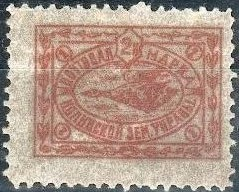
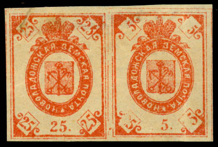
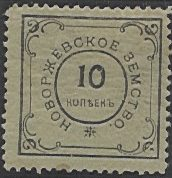
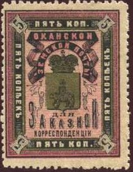

Return To Catalogue - Go to Zemstvos overview - Russia
Note: on my website many of the
pictures can not be seen! They are of course present in the
catalogue;
contact me if you want to purchase it.
2 k blue
(Reduced size)
2 k black, blue, green, yellow and red (perforated) 2 k black, blue, green, yellow and red (imperforated) 2 k black, grey, yellow and red (perforated) 2 k black, grey, yellow and red (imperforated) 4 k black, red, green and blue (perforated) 4 k black, red, green and blue (imperforated)

2 k brown

2 k black on yellow 2 k black on yellow (other type) 2 k black on yellow (text in ellipse) 2 k black on green (text in ellipse) 2 k black on red (2 types)
I have been told that the following stamp is a forgery:

The 'K' in '2K' is different. Genuine stamps of this type have
'holes' in the corners.




2 k black (imperforated) 2 k green (1910) 2 k red (1913)


1 k black on green 1 k green (exists imperforated) 3 k black on lilac 3 k red (exists imperforated) 5 k blue (exists imperforated) 6 k black on blue

5 k green 5 k red 25 k red


Three errors '25' in bottom right side and '25' cliche printed
next to a '5' cliche.

5 k red and blue 5 k red and grey
3 k black on yellow (rare) 5 k black on lilac (1870) 5 k black on violet (1880) 5 k blue on violet (1887) 5 k blue (1888)

5 k blue, orange, black, red and green
3 k black on lilac

5 k lilac (with letters in corners of star) 5 k lilac (without letters in corners of star, 1891)
Fiscal stamps:


3 k blue
These stamps are cancelled to order with a red or blue line (see images).
2 k red, black and green 5 k red, black and grey
(Sorry, no pictures available yet)
3 k blue (-) blue (no value indicated, 1871)

3 k blue (4 types)



2 k black, red and gold 5 k black, red and gold (larger size) 10 k blue and gold Surcharged '2', provisional issue

'2' on 10 k blue and gold (1893)

2 k red 2 k green

2 k green (exists imperforated)

2 k green 5 k orange and green


{kind=link}
{kind=link}
{kind=link}